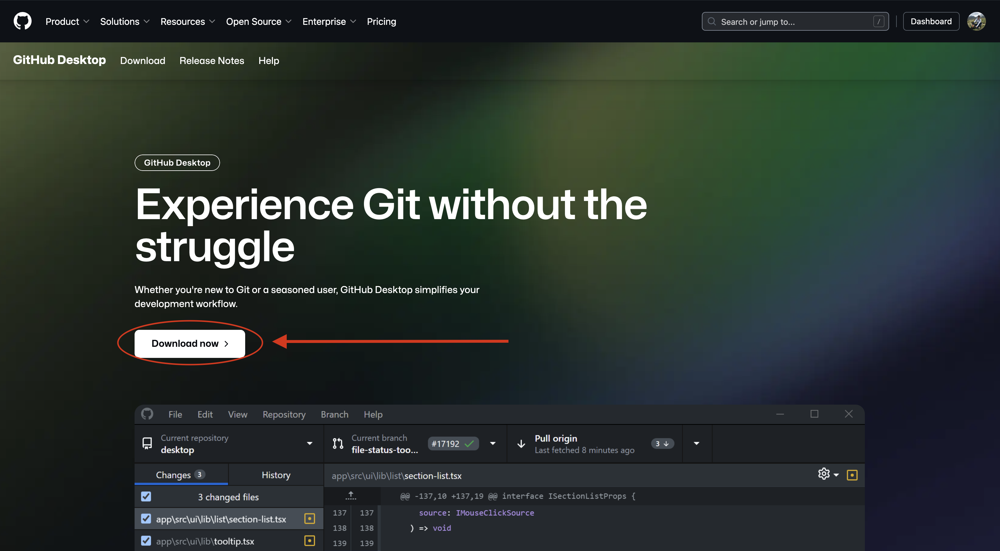
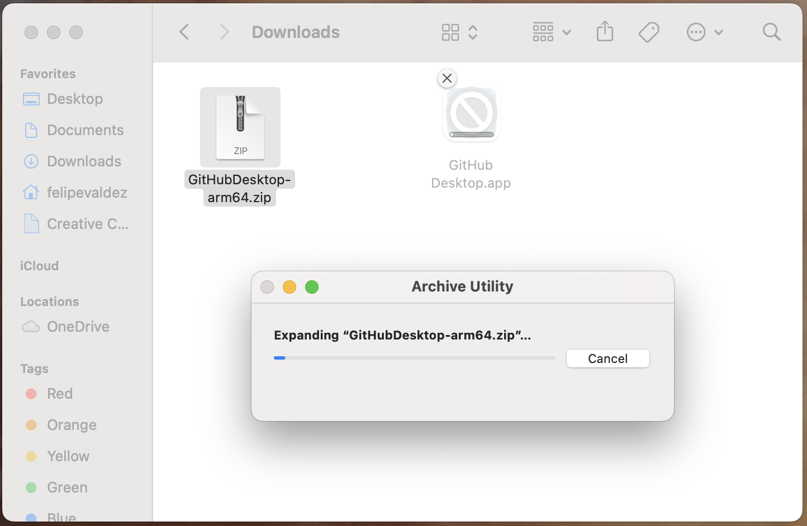
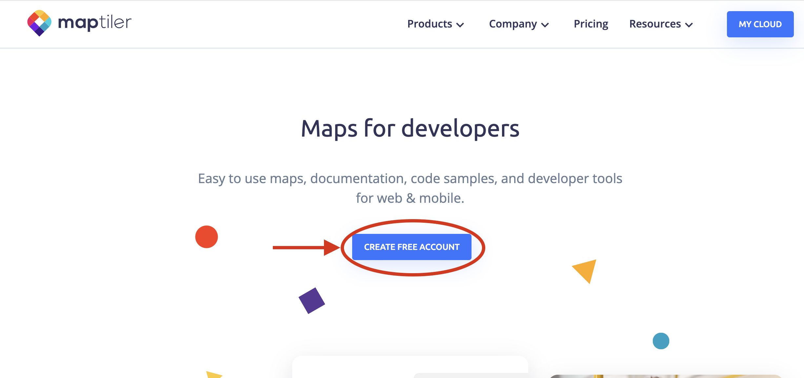
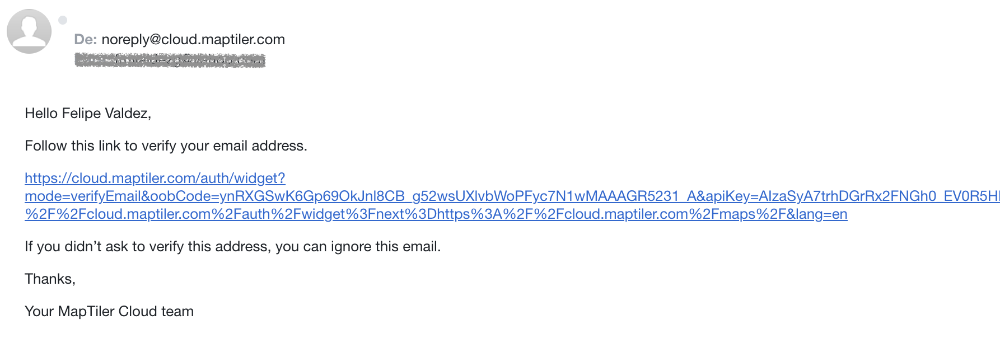
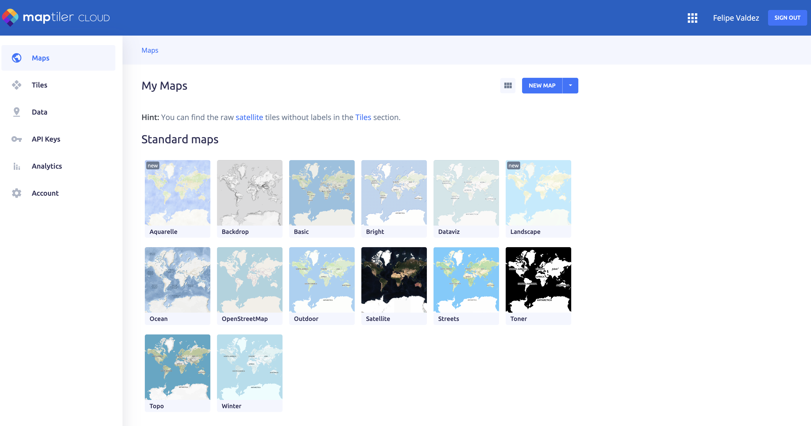

Prerrequisitos
Para este tutorial, necesitarás completar (o tener) lo siguiente:
- 1 Crear una cuenta de
GitHub - 2 Descargar e instalar
GitHub Desktop - 3 Descargar e instalar
VS Code - 4 Crear una cuenta de
MapTiler
Sigue las instrucciones en las secciones a continuación para completar estos prerrequisitos.
1 Crear una cuenta de GitHub
Si quieres aprender más sobre Git y GitHub, recomendamos el siguiente tutorial.
Paso 1
Ve a github.com/signup
Paso 2
Escribe tu correo electrónico, una contraseña y un nombre de usuario para tu nueva cuenta. Luego haz clic en Continue.
Paso 3
Se te harán algunas preguntas.
Cuando se te solicite, asegúrate de seleccionar Continue for free en el tipo de cuenta.

Paso 4
Recibirás un correo electrónico con un código de activación. Introduce el código cuando se te solicite en la página web de GitHub.
Ahora estás listo para crear tu primer repositorio.
2 Descargar e instalar GitHub Desktop
GitHub Desktop es una aplicación gratuita y de código abierto que te ayuda a trabajar con archivos alojados en GitHub u otros servicios de alojamiento Git. Si quieres aprender más sobre esta aplicación, ve aquí.
Dependiendo del sistema operativo (SO) de tu computadora, los siguientes pasos pueden parecer un poco diferentes. En este taller usamos MacOS, pero se puede hacer en cualquier SO.
Paso 1
Inicia sesión en tu cuenta de GitHub, sigue este enlace a la página de descargas y haz clic en el botón Download now.

Paso 2
Una vez descargado, encontrarás un nuevo archivo .zip en tu carpeta de Descargas.
Simplemente puedes hacer doble clic en él (o clic derecho y descomprimir archivo).

Paso 3
Verás el icono de GitHub Desktop junto al archivo descargado. Solo arrastra el icono y suéltalo en tu carpeta de Aplicaciones.
Paso 4
Haz doble clic en el icono de GitHub Desktop para abrir la aplicación.
La primera vez que abras GitHub Desktop, verás un mensaje de tu sistema pidiendo permiso para abrir la aplicación. Simplemente haz clic en Abrir.
3 Descargar e instalar VS Code
Paso 1
En tu navegador de internet, ve a la página de descargas de code.visualstudio.com y haz clic en el botón Download en la esquina superior derecha.
Paso 2
Selecciona el instalador apropiado para el sistema operativo de tu computadora. En este caso estamos usando MacOS.

El botón de descarga en la pantalla principal debería dirigirte a la versión correcta para tu equipo.
Paso 3
Una vez descargado, encontrarás un nuevo archivo .zip en tu carpeta de Descargas.
Simplemente puedes hacer doble clic en él (o clic derecho y descomprimir archivo).

Paso 4
Verás el icono de Visual Studio Code junto al archivo descargado. Solo arrastra el icono y suéltalo en tu carpeta de Aplicaciones.
Paso 5
Haz doble clic en el icono de Visual Studio Code para abrir la aplicación.
La primera vez que abras Visual Studio Code, verás un mensaje de tu sistema pidiendo permiso para abrir la aplicación. Simplemente haz clic en Abrir.

4 Crear una cuenta de MapTiler
MapTiler es una plataforma de software para construir mapas digitales. MapTiler mantiene el proyecto de código abierto OpenMapTiles que consiste en un conjunto de herramientas que permiten a todos crear sus propios mosaicos de mapas vectoriales a partir de datos de OpenStreetMap para alojamiento, auto-alojamiento o uso sin conexión. En este tutorial usaremos el plan gratuito de MapTiler para acceder a sus mosaicos vectoriales alojados y usar el estilo OpenMapTiles.
Paso 1
En tu navegador, ve a la página principal de MapTiler.com y haz clic en Create a free account.

Paso 2
Inicia sesión usando tu dirección de correo electrónico o tu cuenta de Google si tienes una.
Escribe tu nombre y una contraseña para tu cuenta. Luego haz clic en Save para continuar.
Paso 3
Recibirás un correo electrónico para verificar tu cuenta. Haz clic en el enlace del correo electrónico para ser redirigido a tu cuenta de MapTiler.

Ahora puedes iniciar sesión usando tu correo electrónico y la contraseña que creaste en el paso anterior.
Paso 4
Ahora estás listo para comenzar a crear y usar Maptiles y estilos de mapas en MapTiler
